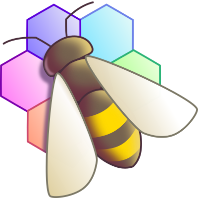

2022-10-30
Es gibt eine neue Sektion unter Info/Links für Tools.
Hier finden zukünftig Tools, die hilfreich für die Spieleentwicklung sind, ihren Platz.
 Der Anfang macht ein Tool mit dem Namen "BeeRef", bei dem Referenz-Fotos gesammelt und angezeigt werden können.
Auch die Option das Fenster immer im Vordergrund anzuzeigen, ist sehr Hilfreich
Des weiteren ist jetzt auch der Material Maker present in unseren Tools.
Damit können Materialien/Texturen auf einfache Weise erstellt werden, und bereits erstellte Materialien, können in euren Projekten frei verwendet werden. (Lizenz beachten!)
Weitere Info unter links/tools
News Godot-rust Addon jetzt für Godot 4 Community Homepage Änderungen Godot zieht in eine neue Stiftung Neue Godot Links Godot Reddit 100.000 Neue Godot 4 Beta 4 GDQuest neuer Charakter Controller Tools Links Homepage Umstellung Community Bereiche Discord Threads Godot Unternehmen gegründet Tausender Marke überschritten Godot 3.5 Änderungen Wartungsrelease - Godot 3.4.4